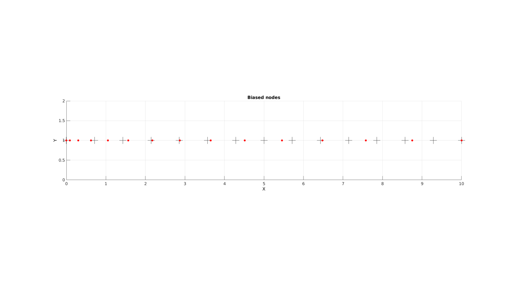

testGibbon
Below is a demonstration of the features of the testGibbon function
Contents
clear; close all; clc;
Syntax
testGibbon(varargin);
Description
testGibbon can be used to run the help and demo (documentation) file for GIBBON. By default the function will run all help and demo files in test mode. However the user may select just the help files or just the demo files and choose publish mode instead of test mode.
Optional inputs: testSet --- 'all', 'help', or 'demo' testMode ---'test' or 'pub' i.e. test run the file or publish the file approveQuestion --- 1 or 0, For 1 the user will be asked to proceed to the next file. If no is answered the file is opened for editing startInd --- e.g. 1 for the first file
Examples
testGibbon('help','test',1,2);
testGibbon -> Test file:2 of 121 HELP_addConstraintsLevel_FEB.m
Adding Constraints level
<?xml version="1.0" encoding="utf-8"?>
<febio_spec>
<Constraints>
<rigid_body mat="2">
<fixed bc="Rx"/>
<fixed bc="Ry"/>
<fixed bc="Rz"/>
<prescribed bc="x" lc="1">3.1415927e+00</prescribed>
<prescribed bc="y" lc="1">1.0000000e+00</prescribed>
<prescribed bc="z" lc="1">-5.0000000e+00</prescribed>
</rigid_body>
</Constraints>
</febio_spec>
testGibbon -> Test file:3 of 121 HELP_addContactLevel_FEB.m
Adding Contact field
----> Defining contact
----> Setting contact parameters
----> Defining contact surface pair
<?xml version="1.0" encoding="utf-8"?>
<febio_spec>
<Contact>
<contact type="sticky">
<laugon>0.000000e+00</laugon>
<tolerance>1.000000e-01</tolerance>
<penalty>5.000000e+02</penalty>
<minaug>0.000000e+00</minaug>
<maxaug>1.000000e+01</maxaug>
<search_tolerance>1.000000e-02</search_tolerance>
<max_traction>0.000000e+00</max_traction>
<snap_tol>1.000000e-02</snap_tol>
<surface set="Contact_master_indentor" type="master"/>
<surface set="Contact_slave_gel" type="slave"/>
</contact>
</Contact>
</febio_spec>
testGibbon -> Test file:4 of 121 HELP_addControlLevel_FEB.m
Adding Control level
<?xml version="1.0" encoding="utf-8"?>
<febio_spec>
<Control>
<time_steps>25.000000</time_steps>
<step_size>0.040000</step_size>
<max_refs>25.000000</max_refs>
<max_ups>0.000000</max_ups>
<dtol>0.001000</dtol>
<etol>0.010000</etol>
<rtol>0.000000</rtol>
<lstol>0.900000</lstol>
<analysis type="static"/>
<time_stepper>
<dtmin>0.000400</dtmin>
<dtmax>0.040000</dtmax>
<max_retries>5.000000</max_retries>
<opt_iter>10.000000</opt_iter>
</time_stepper>
</Control>
</febio_spec>
testGibbon -> Test file:5 of 121 HELP_addGLobalsLevel_FEB.m
Adding Globals level
<?xml version="1.0" encoding="utf-8"?>
<febio_spec>
<Globals>
<Constants>
<T>0.0000000e+00</T>
<R>0.0000000e+00</R>
<Fc>0.0000000e+00</Fc>
</Constants>
</Globals>
</febio_spec>
Adding Globals level
<?xml version="1.0" encoding="utf-8"?>
<febio_spec>
<Globals>
<Constants>
<T>0.0000000e+00</T>
<R>0.0000000e+00</R>
<Fc>0.0000000e+00</Fc>
</Constants>
</Globals>
</febio_spec>
testGibbon -> Test file:6 of 121 HELP_addGeometryLevel_FEB.m
Adding Geometry level
----> Adding node field
----> Adding element field
----> Adding hex8 element entries....
----> Adding tet4 element entries....
----> Adding quad4 element entries....
----> Creating MatAxis entries
----> Adding surface field
----> Adding NodeSet field
<?xml version="1.0" encoding="utf-8"?>
<febio_spec>
<Geometry>
<Nodes>
<node id="1">7.5083889e-01, 7.2868344e-01, 7.5024529e-01</node>
<node id="2">2.8559171e-01, 8.8728468e-01, 9.8099711e-01</node>
<node id="3">7.9681579e-01, 5.5848321e-02, 2.3351581e-01</node>
<node id="4">1.4276583e-01, 1.3821634e-01, 9.6226761e-02</node>
<node id="5">5.0455019e-01, 8.6306498e-01, 3.8458220e-01</node>
<node id="6">6.1068795e-01, 4.2174648e-01, 5.0027255e-01</node>
<node id="7">7.0379674e-01, 4.1131417e-01, 5.7025587e-01</node>
<node id="8">3.8333993e-01, 9.5914134e-01, 9.7663160e-01</node>
</Nodes>
<Elements mat="1" name="Block" type="hex8">
<elem id="1"> 1, 2, 3, 4, 5, 6, 7, 8</elem>
</Elements>
<Elements mat="1" name="tet" type="tet4">
<elem id="2"> 1, 2, 3, 4</elem>
</Elements>
<Elements mat="1" name="surf" type="quad4">
<elem id="3"> 1, 2, 3, 4</elem>
</Elements>
<ElementData>
<element id="1">
<mat_axis>
<a>1.0000000e+00, 0.0000000e+00, -0.0000000e+00</a>
<d>-0.0000000e+00, 1.0000000e+00, 0.0000000e+00</d>
</mat_axis>
</element>
</ElementData>
<Surface name="Contact_master_indentor">
<tri3 id="1"> 1, 2, 3</tri3>
</Surface>
<NodeSet name="NodeSet_1">
<node id="1"/>
<node id="2"/>
<node id="3"/>
</NodeSet>
</Geometry>
</febio_spec>
testGibbon -> Test file:7 of 121 HELP_addMatAxisFibreElementData_FEB.m
Adding Geometry level
----> Adding node field
----> Adding element field
----> Adding hex8 element entries....
----> Creating MatAxis entries
----> Creating MatAxis entries
<?xml version="1.0" encoding="utf-8"?>
<febio_spec>
<Geometry>
<Nodes>
<node id="1">2.7896994e-01, 8.8632811e-01, 9.1977719e-01</node>
<node id="2">5.1786091e-01, 4.7222986e-01, 2.2604544e-01</node>
<node id="3">2.4566664e-01, 1.5891353e-01, 3.6100670e-01</node>
<node id="4">2.9750817e-01, 8.1092079e-01, 3.2456201e-01</node>
<node id="5">6.5047409e-01, 4.7650775e-01, 8.3582114e-02</node>
<node id="6">8.9139331e-01, 1.1628753e-01, 5.1266553e-01</node>
<node id="7">8.6110647e-01, 8.7572061e-01, 8.3286482e-01</node>
<node id="8">2.0991508e-01, 6.3518638e-01, 9.0461350e-01</node>
<node id="9">3.9909391e-01, 9.7281349e-02, 7.2359591e-01</node>
<node id="10">8.8788302e-01, 9.0843946e-01, 3.8299582e-01</node>
<node id="11">2.5652801e-01, 3.5016022e-02, 2.9801706e-01</node>
<node id="12">9.6680160e-01, 3.9749694e-02, 6.9171164e-01</node>
<node id="13">6.1915735e-01, 9.8856789e-01, 8.8045693e-01</node>
<node id="14">1.6534577e-01, 6.8618160e-01, 9.2454831e-01</node>
<node id="15">8.2619903e-01, 3.7668919e-01, 8.1252775e-02</node>
<node id="16">6.5569310e-01, 5.0432425e-01, 4.8267301e-01</node>
<node id="17">5.4645258e-01, 7.6349568e-01, 1.2826506e-01</node>
<node id="18">2.5132928e-01, 4.8874797e-02, 2.5291116e-01</node>
<node id="19">4.0156385e-02, 7.2592766e-01, 8.8396153e-01</node>
<node id="20">2.3337541e-01, 7.0132806e-01, 1.9627691e-01</node>
<node id="21">3.6111294e-01, 4.5889083e-01, 1.2135365e-01</node>
<node id="22">6.3345504e-01, 5.8229481e-01, 5.4369499e-01</node>
<node id="23">9.8609810e-01, 3.3908980e-01, 3.1462075e-01</node>
<node id="24">2.0715665e-01, 1.7062541e-01, 3.8204092e-01</node>
<node id="25">7.5708394e-01, 3.9919340e-01, 7.9153926e-01</node>
</Nodes>
<Elements mat="1" name="Block" type="hex8">
<elem id="1"> 10, 19, 18, 6, 12, 7, 12, 8</elem>
<elem id="2"> 8, 13, 8, 2, 6, 19, 18, 5</elem>
<elem id="3"> 20, 6, 6, 12, 7, 19, 12, 1</elem>
<elem id="4"> 5, 11, 19, 3, 14, 4, 14, 9</elem>
<elem id="5"> 13, 0, 9, 1, 17, 15, 15, 13</elem>
</Elements>
<ElementData>
<element id="1">
<mat_axis>
<a>1.0000000e+00, 0.0000000e+00, -0.0000000e+00</a>
<d>-0.0000000e+00, 1.0000000e+00, 0.0000000e+00</d>
</mat_axis>
</element>
<element id="2">
<mat_axis>
<a>1.0000000e+00, 0.0000000e+00, -0.0000000e+00</a>
<d>-0.0000000e+00, 1.0000000e+00, 0.0000000e+00</d>
</mat_axis>
</element>
<element id="3">
<mat_axis>
<a>1.0000000e+00, 0.0000000e+00, -0.0000000e+00</a>
<d>-0.0000000e+00, 1.0000000e+00, 0.0000000e+00</d>
</mat_axis>
</element>
<element id="4">
<mat_axis>
<a>1.0000000e+00, 0.0000000e+00, -0.0000000e+00</a>
<d>-0.0000000e+00, 1.0000000e+00, 0.0000000e+00</d>
</mat_axis>
</element>
<element id="5">
<mat_axis>
<a>1.0000000e+00, 0.0000000e+00, -0.0000000e+00</a>
<d>-0.0000000e+00, 1.0000000e+00, 0.0000000e+00</d>
</mat_axis>
</element>
</ElementData>
</Geometry>
</febio_spec>
testGibbon -> Test file:8 of 121 HELP_adjacentdircount.m
Lc =
0 1 2 0 0 3
0 0 2 0 0 3
1 0 0 1 1 3
Lc =
0 2 2 0 0 1
0 0 1 0 0 1
1 0 0 3 3 3
Lc(:,:,1) =
0 1 1 0 0 3
0 0 3 0 0 3
1 0 0 1 1 3
Lc(:,:,2) =
2 0 0 2 2 3
0 0 3 0 0 3
0 2 2 0 0 3
Lc(:,:,3) =
2 0 0 2 2 3
0 0 3 0 0 3
0 2 2 0 0 3
testGibbon -> Test file:9 of 121 HELP_affineTransformationMatrixDirect.m
testGibbon -> Test file:10 of 121 HELP_anim8.m
testGibbon -> Test file:11 of 121 HELP_bias_nodes1d.m
 
GIBBON www.gibboncode.org
Kevin Mattheus Moerman, gibbon.toolbox@gmail.com